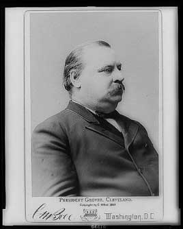

The first president to serve two non-consecutive terms. A small-government Democrat, he vetoed more bills in his first term than all earlier presidents combined, signed the Interstate Commerce Act, and fought high tariffs. His second term began with the Panic of 1893. He had the Sherman Silver Purchase Act repealed, borrowed gold through J.P. Morgan to protect the dollar, and sent federal troops to break the Pullman strike.
Shaded areas show the years in office, with a few years before and after for comparison. Budget years ran July to June until 1976 (now October to September), so each year's figures cover parts of two calendar years.
June 30, 1884 (end of fiscal 1884): $1.83 billion → June 30, 1888 (end of fiscal 1888): $1.69 billion · June 30, 1892 (end of fiscal 1892): $1.59 billion → June 30, 1896 (end of fiscal 1896): $1.77 billion
Daily debt figures don't exist before 1993, so Cleveland's numbers use the fiscal years closest to his terms, the same rule as every other page. The debt fell in his first term and rose in his second, when the government borrowed to rebuild its gold reserve.
Debt as a share of GDP. Above 100% means the debt is bigger than a year of everything the country produces.
Money borrowed each budget year (below the line) or paid down (above). The White House budget office's yearly figures begin in 1901.
1893: 11.7% → 1896: 14.5%. Yearly averages for his second term. National estimates by economist Stanley Lebergott begin in 1890, so none exist for his first term.
How much prices rose each year (consumer price index).
What everyday prices and paychecks did while in office.
Prices use the consumer price index (MeasuringWorth). The minimum wage is the federal rate set by Congress.
253 orders. 113 in the first term and 140 in the second, as counted by the American Presidency Project.
Yearly counts aren't reliable for this era. Orders were not numbered until 1907, when the State Department numbered the ones already in its files, and many orders were never numbered at all, so only the total is shown.
Source: American Presidency Project: executive orders (full list of every order).
Most orders in this era were routine, such as setting aside public land or exempting jobs from civil service rules.
Incomplete: orders before 1929 were not numbered or collected consistently. This archive has 173 of the roughly 253 orders counted for this president.
Source: Executive Orders Archive, compiled from the American Presidency Project and the Federal Register. Topics are the archive's automated tags; "Revoked" and similar labels come from the Federal Register's records.
A pardon wipes out the punishment for a federal crime; a commutation shortens a sentence but leaves the conviction. The Justice Department's published counts begin in 1900.
The Justice Department's published clemency counts begin in fiscal 1900, so there are no reliable yearly totals for this presidency.
Source: U.S. Dept. of Justice, clemency statistics, which lists every recipient with the crime and sentence.
The crime: Polygamy and 'unlawful cohabitation' under the Edmunds Act
Sentence: Various
Why it drew attention: Expanded Benjamin Harrison's 1893 amnesty, restoring civil rights to those who had obeyed the law since 1890.
SourceThe same checklist for every president. Tap a row for details and sources.
No articles of impeachment were voted on.
Never charged.
No member of his cabinet or White House staff was convicted.
None were appointed.
Attorney General Richard Olney, a former railroad lawyer who still sat on a railroad board, used a federal court injunction and troops against the 1894 Pullman strike. The Supreme Court upheld the injunction in 1895.
SourceNo one in the administration was charged or formally penalized.
What happened, what was proven, and how it ended.
Cleveland acknowledged he might be the father of Halpin's son and paid support. Halpin later said he had forced himself on her; after she began drinking, the boy was placed in an orphanage and she was briefly committed to an asylum, arrangements Cleveland was involved in.
Outcome: The assault accusation was never tested in court. 'Ma, Ma, where's my Pa?' became a Republican chant in 1884.
SourceOver the objection of Illinois's governor, Cleveland sent federal troops to Chicago to end a nationwide railroad strike, citing the mail. About 30 strikers were killed, and union leader Eugene Debs was jailed for violating an injunction.
Outcome: The Supreme Court upheld the injunction in In re Debs (1895).
SourceIn the middle of a financial panic, surgeons removed a tumor from Cleveland's jaw on a friend's yacht in New York harbor. The White House denied a reporter's accurate story.
Outcome: Confirmed in 1917 by one of the surgeons.
SourceTo stop a run on the Treasury's gold, the government sold bonds to a syndicate led by J.P. Morgan and August Belmont on terms critics said handed them big profits.
Outcome: The gold reserve was saved; a Senate committee investigated the bond sales in 1896.
SourceWidely quoted remarks, with the context they were said in.
Though the people support the Government, the Government should not support the people.
Tell the truth.